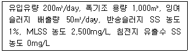
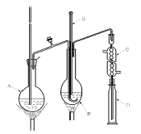
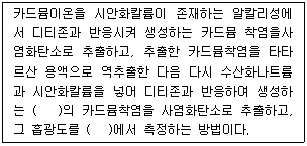
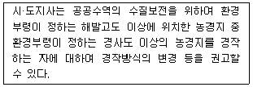
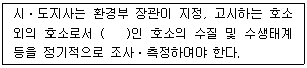
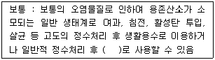
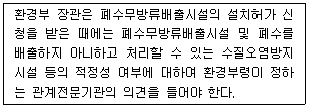
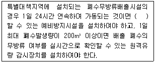

수질환경산업기사 (2013-08-18 기출문제)
1과목: 수질오염개론
1. 박테리아 10g/L의 이론적인 COD는? (단, 박테리아 경험식 적용, 반응생성물은 CO2, H2O, NH3이다.)
- 21.1g/L
- 18.4g/L
- 16.0g/L
- 14.2g/L
(정답률: 64%)

2. glycine(CH2(NH2)COOH)의 이론적 COD/TOC의 비는? (단, 글리신 최종분해물은 CO2, HNO3, H2O이다.)
- 4.67
- 5.83
- 6.72
- 8.32
(정답률: 65%)
3. 진핵생물이나 원핵생물 세포 내 '리보솜'의 역할로 가장 옳은 것은?
- 호흡대사
- 소화, 잔유물 제거와 배출
- 단백질 합성
- 화학에너지 전환
(정답률: 70%)
4. BOD 농도 200mg/L, 유량 1,000m3/day인 폐수를 처리하여 BOD 농도 4mg/L, 유량 50,000m3/day인 하천에 방류했을 경우 합류지점의 BOD 농도는? (단, 폐수는 80% 처리 후 방류하며, 합류지점에서는 완전 혼합되었다고 한다.)
- 4.3mg/L
- 4.7mg/L
- 5.4mg/L
- 5.8mg/L
(정답률: 59%)
5. 0.00025M의 NaCl 용액의 농도(ppm)는? (단, NaCl 분자량 : 58.5)
- 9.3
- 14.6
- 21.3
- 29.8
(정답률: 64%)
6. Ca2+ 이온의 농도가 80mg/L, Mg2+ 이온의 농도가 4.8mg/L인 물의 경도는 몇 mg/L as CaCO3인가? (단, 원자량은 Ca=40, Mg=24이다.)
- 200
- 220
- 240
- 260
(정답률: 59%)
7. 20℃에서 어떤 하천수의 최종 BOD 농도는 50mg/L이고, 5일 BOD 농도는 30mg/L이다. 하천수의 수온이 10℃일 때 하천수의 반응속도상수 K(탈산소계수)는? (단, 온도에 따른 보정상수는 1.047, 속도식은 상용대수를 기준으로 함)
- 0.03d-1
- 0.⑤d-1
- 0.07d-1
- 0.09d-1
(정답률: 49%)
8. 우리나라 물의 이용 형태별로 볼 때 가장 수요가 많은 용수는 다음 중 어느 것인가?
- 생활용수
- 공업용수
- 농업용수
- 유지용수
(정답률: 89%)
9. 수질 모델 중 Streeter & Phelps 모델에 관해 내용으로 옳은 것은?
- 하천을 완전혼합흐름으로 가정하였다.
- 하천에서의 산소변화를 단위 면적에 대한 물질수지 방정식으로 모델화하였다.
- 조류 및 슬러지 퇴적물의 영향이 큰 균일한 단면의 하천에 적용된다.
- 유기물의 분해와 재폭기만을 고려하였다.
(정답률: 64%)
10. 질소순환 과정에서 질산화를 나타내는 반응은?
- N2 → NO2- → NO3-
- NO3- → NO2- → N2
- NO3- → NO2- → NH3
- NH3 → NO2- → NO3-
(정답률: 77%)
11. 0.04M-HCI이 30% 해리되어 있는 수용액의 pH는?
- 2.82
- 2.42
- 1.92
- 1.72
(정답률: 79%)
12. 다음 탈산소계수(base=상용대수)가 0.12day-1일 때 BOD3/BOD5의 값은?
- 0.55
- 0.65
- 0.75
- 0.85
(정답률: 77%)
13. 어느 물질이 반응을 시작할 때의 농도가 200mg/L 이고, 2시간 후의 농도가 35mg/L로 되었다. 반응시작 1시간 후의 반응물질 농도는? (단, 1차 반응 기준)
- 약 56mg/L
- 약 84mg/L
- 약 112mg/L
- 약 133mg/L
(정답률: 76%)
14. 어느 폐수의 BODu가 300mg/L, K1값이 0.15/day라면 BOD5는? (단, 상용대수 기준)
- 270mg/L
- 256mg/L
- 247mg/L
- 220mg/L
(정답률: 83%)
15. 수은주높이 300mm는 수주로 몇 mm인가? (단, 표준상태 기준)
- 1,960
- 3,220
- 3,760
- 4,078
(정답률: 77%)
16. 어떤 폐수의 분석결과 COD 400mg/L이었고, BOD5가 250mg/L이었다면 NBDCOD는? (단, 탈산소계수 K1(밑이 10)=0.2/day이다.)
- 78mg/L
- 122mg/L
- 172mg/L
- 210mg/L
(정답률: 80%)
17. 글루코스(C6H12O6) 500mg/L를 혐기성 분해시킬 때 생산되는 이론적 메탄의 농도는?
- 약 87mg/L
- 약 114mg/L
- 약 133mg/L
- 약 157mg/L
(정답률: 58%)
18. Glucose(C6H12O6) 800mg/L 용액을 호기성 처리 시 필요한 이론적 인량(P, mg/L)은? (단, BOD5：N：P=100：5：1, K1 은 0.1day-1, 상용대수 기준)
- 약 9.6
- 약 7.9
- 약 5.8
- 약 3.6
(정답률: 69%)
19. 적조에 의해 어패류가 폐사하는 원인으로 가장 거리가 먼 것은?
- 수면의 적조생물막에 의한 광차단현상으로 인한 대사기능 저하로 폐사한다.
- 적조생물에 포함된 치사성의 유독물질로 인해 폐사한다.
- 적조생물의 급속한 사후분해에 의해 DO가 소비되면서 황화수소나 부패독과 같은 유해물질로 인해 폐사한다.
- 적조생물이 아가미 등에 부착되어 질식사한다.
(정답률: 53%)
20. PCB에 관한 설명으로 틀린 것은?
- 물에는 난용성이나 유기용제에 잘 녹는다.
- 화학적으로 불활성이고, 절연성이 좋다.
- 만성중독 증상으로 카네미유증이 대표적이다.
- 고온에서 대부분의 금속과 합금을 부식시킨다.
(정답률: 70%)
2과목: 수질오염방지기술
21. 활성슬러지 혼합액을 부상농축기로 농축하고자 한다. 부상농축기에 대한 최적 A/S비가 0.008이고, 공기 용해도가 18.7mL/L일 때 용존공기의 분율이 0.5라면 필요한 압력은? (단, 비순환식 기준, 혼합액의 고형물농도는 0.2%임)
- 3.98atm
- 3.62atm
- 3.32atm
- 3.14atm
(정답률: 54%)
22. 하수고도처리공법인 수정 Bardenpho(5단계)에 관한 설명과 가장 거리가 먼 것은?
- 질소와 인을 동시에 처리할 수 있다.
- 내부반송률을 낮게 유지할 수 있어 비교적 적은 규모의 반응조 사용이 가능하다.
- 폐슬러지 내의 인의 함량이 높아 비료가치가 있다.
- 2차 호기성조(재폭기조)의 역할은 최종 침전조에서 탈질에 의한 Rising 현상 및 인의 재방출을 방지하는 데 있다.
(정답률: 66%)
23. 염소 요구량이 5mg/L인 하수 처리수에 잔류염소 농도가 0.5mg/L가 되도록 염소를 주입하려고 한다. 이때 염소 주입량은?
- 4.5mg/L
- 5.0mg/L
- 5.5mg/L
- 6.0mg/L
(정답률: 88%)
24. 폐수량이 10,000m3/d, SS 농도 500mg/L인 폐수가 처리장으로 유입되고 있다. 폭기조의 MLSS 농도가 3,000mg/L이고, SVI가 125라면 이 폭기조의 MLSS 농도를 변동 없이 유지하기 위한 반송슬러지 유량은?
- 4,500m3/d
- 5,000m3/d
- 5,500m3/d
- 6,000m3/d
(정답률: 58%)
25. 슬러지 함수율이 95%에서 90%로 낮아지면 전체 슬러지의 부피는 몇 % 감소되는가? (단, 슬러지 비중은 1.0)
- 15%
- 25%
- 50%
- 75%
(정답률: 90%)
26. 원형관수로에 물의 수심이 50%로 흐르고 있다. 이때 경심은? (단, D는 원형관수로 직경)
- D/4
- D/8
- πD
- 2πD
(정답률: 58%)
27. 하수고도 처리공법인 A/O 공법의 공정 중 혐기조의 역할을 가장 적절하게 설명한 것은?
- 유기물 제거, 질산화
- 탈질, 유기물 제거
- 유기물 제거, 용해성 인 방출
- 유기물 제거, 인 과잉흡수
(정답률: 83%)
28. 폐유를 함유한 공장폐수가 있다. 이 폐수에는 A, B 두 종류의 기름이 있는데 A의 비중은 0.90이고, B의 비중은 0.94이다. A와 B의 부상 속도비(VA/VB)는? (단, stokes법칙 적용, 물의 비중은 1.0이고, 직경은 동일함)
- 1.12
- 1.25
- 1.43
- 1.67
(정답률: 68%)
29. BOD 농도가 200ppm인 유량이 2,000m3/d인 폐수를 표준 활성슬러지법으로 처리한다. 폭기조의 크기가 폭 5m, 길이 10m, 유효깊이 4m로 할 때 폭기조의 용적부하(kgBOD/m3⋅day)는?
- 1.5
- 2.0
- 2.5
- 3.0
(정답률: 71%)
30. 어느 식품공장에서 BOD가 200mg/L인 폐수를 하루에 500m3 배출하고 있다. 생물학적 처리법으로 처리하기 위한 제반환경여건 중 질소성분이 부족하여 요소(NH2)2CO를 첨가하려고 한다. 소요되는 요소의 양(kg/day)은? (단, BOD：N：P=100：5：1 기준, 폐수 내 질소는 고려하지 않음)
- 5.7
- 10.7
- 15.7
- 20.7
(정답률: 44%)
31. BOD가 250mg/L인 하수를 1차 및 2차 처리로 BOD 10mg/L으로 유지하고자 한다. 2차 처리효율이 75%라면 1차 처리효율은?
- 73%
- 78%
- 84%
- 89%
(정답률: 65%)
32. 어떤 공장폐수에 미처리된 유기물이 10mg/L 함유되어 있다. 이 폐수를 분말활성탄 흡착법으로 처리하여 1mg/L까지 처리하고자 할 때 분말활성탄은 폐수 1m3당 몇 g이 필요한가? (단, Freundlich식을 이용, K=0.5, n=1)
- 18
- 24
- 36
- 42
(정답률: 54%)
33. 화학합성을 하는 자가영양계미생물의 에너지원과 탄소원으로 옳은 것은? (차례대로 에너지원, 탄소원)
- 무기물의 산화환원반응, 유기탄소
- 무기물의 산화환원반응, CO2
- 유기물의 산화환원반응, 유기탄소
- 유기물의 산화환원반응, CO2
(정답률: 59%)
34. 피혁공장에서 BOD 400mg/L의 폐수가 1,000m3/day로 방류되고, 이것을 활성슬러지법으로 처리하고자 한다. 하루에 처리장으로 유입되는 유량의 5%(부피기준, 함수율 99%)에 해당되는 슬러지가 발생된다고 보고, 이때 슬러지를 4.5kg/m2-h(고형물 기준)의 성능을 가진 진공여과기로 매일 8시간씩 탈수작업을 하여 처리하려면 여과기 면적은? (단, 슬러지 비중은 1.0으로 가정함)
- 약 4m2
- 약 8m2
- 약 11m2
- 약 14m2
(정답률: 27%)
35. 염소이온 농도가 500mg/L이고, BOD가 5,000mg/L인 공장폐수를 염소이온이 없는 깨끗한 물로 희석한 후 활성슬러지법으로 처리하여 얻은 유출수의 BOD는 10mg/L이고, 염소이온이 20mg/L이었다. 이때 BOD 제거율은?
- 90%
- 92%
- 95%
- 98%
(정답률: 50%)
36. 1차 처리된 분뇨의 2차 처리를 위해 폭기조, 2차 침전지로 구성된 활성슬러지 공정을 운영하고 있다. 운영조건이 다음과 같을 때 폭기조 내의 고형물 체류시간은?

- 4일
- 5일
- 6일
- 7일
(정답률: 49%)
37. 폐수 6,000m3/day에서 생성되는 1차 슬러지의 부피(m3/day)는 얼마인가? (단, 1차 침전탱크 체류시간 2hr, 현탁고형물 제거효율 60%, 폐수 중 현탁고형물 함유량 220mg/L, 발생슬러지 비중 1.03, 슬러지 함수율 94%, 1차 침전탱크에서 제거된 현탁고형물 전량이 슬러지로 발생되는 것으로 가정함)
- 약 10
- 약 13
- 약 16
- 약 19
(정답률: 55%)
38. 활성슬러지 변법인 장기포기법에 관한 내용으로 틀린 것은?
- SRT를 길게 유지하며, 동시에 MLSS 농도를 낮게 유지하여 처리하는 방법이다.
- 활성슬러지가 자산화되기 때문에 잉여슬러지의 발생량은 표준활성슬러지법에 비해 적다.
- 과잉포기로 인하여 슬러지의 분산이 야기되거나 슬러지의 활성도가 저하되는 경우가 있다.
- 질산화 진행되면서 pH의 저하가 발생한다.
(정답률: 52%)
39. 물 5m3의 DO가 9.0mg/L이다. 이 산소를 제거하는데 이론적으로 필요한 아황산나트륨(Na2SO3)의 양은? (단, 나트륨 원자량 : 23)
- 약 355g
- 약 385g
- 약 402g
- 약 429g
(정답률: 68%)
40. 유량이 2,000m3/day이고, SS 농도가 200mg/L인 하수가 1차 침전지에서 처리된 후 처리수의 SS 농도는 90mg/L가 되었다. 이때 1차침전지에서 발생하는 슬러지의 양은 몇 m3/day인가? (단, 슬러지의 함수율은 97%이고, 비중은 1.0이며, 기타 조건은 고려하지 않음)
- 4.3
- 5.3
- 6.3
- 7.3
(정답률: 36%)
3과목: 수질오염공정시험방법
41. 취급 또는 저장하는 동안에 기체 또는 미생물이 침입하지 아니하도록 내용물을 보호하는 용기는?
- 밀봉용기
- 기밀용기
- 밀폐용기
- 완밀용기
(정답률: 82%)
42. 시료의 전처리법 중 유기물을 다량 함유하고 있으면서 산분해가 어려운 시료에 적용하기 가장 적절한 것은?
- 회화에 의한 분해
- 질산 － 과염소산법
- 질산 － 황산법
- 질산 － 염산법
(정답률: 73%)
43. 다음 그림은 자외선/가시선 분광법으로 불소측정 시 사용되는 분석기기인 수증기 증류장치이다. C의 명칭으로 옳은 것은?

- 유리연결관
- 냉각기
- 정류관
- 메스실리더관
(정답률: 74%)
44. 부유물질 측정에 관한 내용으로 틀린 것은?
- 유지(oil) 및 혼합되지 않는 유기물도 여과지에 남아 부유물질 측정값을 높게 할 수 있다.
- 철 또는 칼슘이 높은 시료는 금속침전이 발생하며, 부유물질 측정에 영향을 줄 수 있다.
- 증발잔유물이 1,000mg/L 이상인 경우 해수, 공장폐수 등은 특별히 취급하지 않을 경우 높은 부유물질 값을 나타낼 수 있는데, 이 경우 여과지를 여러 번 세척한다.
- 큰 모래입자 등과 같은 큰 입자들은 부유물질 측정에 방해를 주며, 충분히 침전시킨 후 상등수를 채취하여 분석을 실시한다.
(정답률: 56%)
45. 페놀류-자외선/가시선 분광법 측정 시 정량한계에 관한 내용으로 옳은 것은?
- 클로로폼추출：0.003mg/L, 직접측정법：0.03mg/L
- 클로로폼추출법：0.03mg/L, 직접측정법：0.003mg/L
- 클로로폼추출법：0.0⑤mg/L, 직접측정법：0.⑤mg/L
- 클로로폼추출법：0.⑤mg/L, 직접측정법：0.0⑤mg/L
(정답률: 69%)
46. 전기전도도 측정에 관한 설명으로 틀린 것은?
- 전극의 표면이 부유물질, 그리스, 오일 등으로 오염될 경우 전기전도도의 값이 영향을 받을 수 있다.
- 전기전도도 측정계는 지시부와 검출부로 구성되어 있다.
- 정확도는 측정값의 % 상대표준편차(RSD)로 계산하며, 측정값의 25% 이내이어야 한다.
- 전기전도도 측정계 중에서 25℃에서의 자체온도 보상회로가 장치되어 있는 것이 사용하기에 편리하다.
(정답률: 53%)
47. 다음 중 관내에 압력이 존재하는 관수로 흐름에서의 관내 유량측정방법이 아닌 것은?
- 벤튜리미터
- 오리피스
- 파샬플롬
- 자기식 유량측정기
(정답률: 77%)
48. 클로로필-a 시료의 보존방법으로 옳은 것은?
- 즉시 여과하여 4℃ 이하에서 보관
- 즉시 여과하여 0℃ 이하에서 보관
- 즉시 여과하여 -10℃ 이하에서 보관
- 즉시 여과하여 -20℃ 이하에서 보관
(정답률: 58%)
49. 폐수처리 공정 중 관내의 압력이 필요하지 않은 측정용 수로의 유량측정장치인 웨어가 적용되지 않는 것은?
- 공장폐수원수
- 1차 처리수
- 2차 처리수
- 공정수
(정답률: 78%)
50. 인산염인을 측정하기 위해 적용 가능한 시험방법과 가장 거리가 먼 것은?
- 이온크로마토그래피
- 자외선/가시선 분광법(카드뮴-구리 환원법)
- 자외선/가시선 분광법(아스코르빈산 환원법)
- 자외선/가시선 분광법(이염화주석 환원법)
(정답률: 44%)
51. 다음 측정 항목 중 시료의 최대 보존기간이 가장 짧은 것은?
- 시안
- 탁도
- 부유물질
- 염소이온
(정답률: 55%)
52. 다음은 카드뮴 측정원리(자외선/가시선 분광법)에 대한 내용이다. ( ) 안에 들어갈 내용이 순서대로 옳게 나열된 것은?

- 적색, 420nm
- 적색, 530nm
- 청색, 620nm
- 청색, 680nm
(정답률: 71%)
53. 용액 중 CN-농도를 2.6mg/L로 만들려고 하면 물 1,000L에 NaCN 몇 g을 용해시키면 되는가? (단, Na 원자량 : 23)
- 약 5g
- 약 10g
- 약 15g
- 약 20g
(정답률: 62%)
54. 염소이온-적정법 측정 시 적정의 종말점에 관한 설명으로 옳은 것은?
- 엷은 황갈색 침전이 나타날 때
- 엷은 적자색 침전이 나타날 때
- 엷은 적황색 침전이 나타날 때
- 엷은 청록색 침전이 나타날 때
(정답률: 46%)
55. 분원성대장균군 측정 방법 중 막여과법에 관한 설명으로 옳지 않은 것은?
- 분원성대장균군수/mg 단위로 표시한다.
- 핀셋은 끝이 뭉툭하고 넓으며, 여과막을 집어 올릴 때 여과막을 손상시키지 않는 형태의 것으로 화염멸균이 가능한 것을 사용한다.
- 배양기 또는 항온수조는 배양온도를 (44.5±0.2)℃로 유지할 수 있는 것을 사용한다.
- 분원성대장균군은 배양 후 여러 가지 색조를 띠는 청색의 집락을 형성하며 이를 계수한다.
(정답률: 51%)
56. 수질오염공정시험기준 중 크롬의 측정방법이 아닌 것은?
- 자외선/가시선 분광법
- 유도결합플라스마 - 원자발광분광법
- 유도결합플라스마 - 질량분석법
- 이온전극법
(정답률: 55%)
57. 측정 금속이 수은인 경우 시험방법으로 해당되지 않는 것은?
- 자외선/가시선 분광법
- 양극벗김전압전류법
- 유도결합플라스마 원자발광분광법
- 냉증기-원자형광법
(정답률: 46%)
58. 노말헥산 추출물질시험법에서 염산(1+1)으로 산성화할 때 넣어주는 지시약과 이때의 조절되는 pH를 바르게 나타낸 것은?
- 메틸레드 － pH 4.0 이하
- 메틸오렌지 － pH 4.0 이하
- 메틸레드 － pH 2.0 이하
- 메틸오렌지 － pH 2.0 이하
(정답률: 70%)
59. 4각 웨어에 의하여 유량을 측정하려고한다. 웨어의 수두 90cm, 웨어 절단의 폭 1.0m일 때의 유량은? (단, 유량계수 K=1.2임)
- 약 1.03m3/min
- 약 1.26m3/min
- 약 1.37m3/min
- 약 1.53m3/min
(정답률: 75%)
60. 다음 중 질산성 질소의 측정방법이 아닌 것은?
- 이온크로마토그래피
- 자외선/가시선 분광법 － 부루신법
- 자외선/가시선 분광법 － 활성탄흡착법
- 자외선/가시선 분광법 － 데발다합금·킬달법
(정답률: 53%)
4과목: 수질환경관계법규
61. 수질 및 수생태계 환경기준 중 해역인 경우 생태기반 해수수질 기준으로 옳은 것은?
- 등급 : I(매우 좋음), 수질평가 지수값 : 12 이하
- 등급 : I(매우 좋음), 수질평가 지수값 : 23 이하
- 등급 : I(매우 좋음), 수질평가 지수값 : 34 이하
- 등급 : I(매우 좋음), 수질평가 지수값 : 40 이하
(정답률: 47%)
62. 다음의 수질오염방지시설 중 물리적 처리시설에 해당되는 것은?
- 응집시설
- 흡착시설
- 이온교환시설
- 침전물개량시설
(정답률: 64%)
63. 폐수의 처리능력과 처리가능성을 고려하여 수탁하여야 하는 폐수처리업자의 준수사항을 지키지 아니한 폐수처리업자에게 부과되는 벌칙기준은?
- 300만 원 이하의 벌금
- 500만 원 이하의 벌금
- 1천만 원 이하의 벌금
- 1년 이하의 징역 또는 1천만 원 이하의 벌금
(정답률: 36%)
64. 다음에서 언급한 '환경부령이 정하는 해발고도' 기준은?

- 해발 400m
- 해발 500m
- 해발 600m
- 해발 700m
(정답률: 55%)
65. 수질오염경보의 종류 중 조류경보 단계가 '조류경보'인 경우 취수장, 정수장 관리자의 조치사항이 아닌 것은?
- 조류증식 수심 이하로 취수구 이동
- 정수처리 강화(활성탄처리, 오존처리)
- 취수구와 조류가 심한 지역에 대한 방어막 설치
- 정수의 독소분석 실시
(정답률: 56%)
66. 비점오염저감시설 중 장치형 시설에 해당되는 것은?
- 생물학적 처리형 시설
- 저류시설
- 식생형 시설
- 침투시설
(정답률: 49%)
67. 다음은 호소수 이용상황 등 조사⋅측정 등의 기준에 관한 내용이다. ( ) 안에 옳은 내용은?

- 원수 취수량이 10만 톤 이상
- 원수 취수량이 20만 톤 이상
- 만수위일 때의 면적이 30만 제곱미터 이상
- 만수위일 때의 면적이 50만 제곱미터 이상
(정답률: 54%)
68. 대권역 수질 및 수생태계 보전계획 수립 시 포함되어야 하는 사항과 가장 거리가 먼 것은?
- 점오염원, 비점오염원 및 기타 오염원에 의한 수질오염 물질 발생량
- 상수원 및 물 이용현황
- 수질 및 수생태계 변화 추이 및 목표기준
- 수질 및 수생태계 보전대책
(정답률: 42%)
69. 다음은 수질 및 수생태계 환경기준 중 하천에서 생활환경기준의 등급별 수질 및 수생태계 상태에 관한 내용이다. ( ) 안에 옳은 내용은?

- 재활용수
- 농업용수
- 수영용수
- 공업용수
(정답률: 76%)
70. 폐수종말처리시설의 방류수수질 기준으로 옳은 것은? (단, IV 지역 기준, ( ) 농공단지 폐수종말처리시설의 방류수수질 기준)
- 부유물질 10(10)mg/L 이하
- 부유물질 20(20)mg/L 이하
- 부유물질 30(30)mg/L 이하
- 부유물질 40(40)mg/L 이하
(정답률: 27%)
71. 폐수처리업의 등록을 한 자에 대하여 영업정지처분에 갈음하여 부과할 수 있는 과징금의 최대액수는?
- 1억 원
- 2억 원
- 3억 원
- 5억 원
(정답률: 57%)
72. 오염총량관리 조사⋅연구반이 속한 기관은?
- 시·도 보건환경연구원
- 유역환경청 또는 지방환경청
- 국립환경과학원
- 한국환경공단
(정답률: 75%)
73. 다음에서 언급한 '환경부령이 정하는 관계전문기관'은?

- 한국환경공단
- 국립환경과학원
- 한국환경기술개발원
- 환경산업시험원
(정답률: 48%)
74. 다음은 폐수무방류배출시설의 세부 설치기준에 관한 내용이다. ( ) 안에 옳은 내용은?

- 배출 폐수의 15%를 처리
- 배출 폐수의 30%를 처리
- 배출 폐수의 50%를 처리
- 배출 폐수를 전량 처리
(정답률: 54%)
75. 중점관리저수지 지정 기준으로 옳은 것은?
- 총저수량이 5백만 제곱미터 이상인 저수지
- 총저수량이 1천만 제곱미터 이상인 저수지
- 총저수량이 3천만 제곱미터 이상인 저수지
- 총저수량이 5천만 제곱미터 이상인 저수지
(정답률: 52%)
76. 환경부 장관이 설치할 수 있는 측정망의 종류와 가장 거리가 먼 것은?
- 생물측정망
- 공공수역 오염원 측정망
- 퇴적물 측정망
- 비점오염원에서 배출되는 비점오염물질 측정망
(정답률: 49%)
77. 환경부 장관이 비점오염원관리지역을 지정, 고시한 때에 수립하는 비점오염원관리대책에 포함되어야 하는 사항과 가장 거리가 먼 것은?
- 관리목표
- 관리대상 수질오염물질의 종류 및 발생량
- 관리대상 수질오염물질의 발생 예방 및 저감방안
- 관리대상 수질오염물질의 수질오염에 미치는 영향
(정답률: 66%)
78. 환경기술인을 바꾸어 임명하는 경우의 신고 기준으로 옳은 것은?
- 그 사유가 발생함과 동시에 신고하여야 한다.
- 그 사유가 발생한 날부터 5일 이내에 신고하여야 한다.
- 그 사유가 발생한 날부터 10일 이내에 신고하여야 한다.
- 그 사유가 발생한 날부터 15일 이내에 신고하여야 한다.
(정답률: 61%)
79. 종말처리시설에 유입된 수질오염물질을 최종 방류구를 거치지 아니하고 배출하거나 최종 방류구를 거치지 아니하고 배출할 수 있는 시설을 설치하는 행위를 한 자에 대한 벌칙 기준은?
- 1년 이하의 징역 또는 1천만 원 이하의 벌금
- 3년 이하의 징역 또는 2천만 원 이하의 벌금
- 5년 이하의 징역 또는 3천만 원 이하의 벌금
- 7년 이하의 징역 또는 5천만 원 이하의 벌금
(정답률: 43%)
80. 오염총관리지역을 관할하는 시ㆍ도지사가 수립하여 환경부 장관에게 승인을 얻는 오염총관리기본계획에 포함되는 사항과 가장 거리가 먼 것은?
- 당해 지역 개발계획의 내용
- 지방자치단체별ㆍ수계구간별 오염부하량의 할당
- 당해 지역의 점오염원, 비점오염원. 기타오염원 현황
- 당해 지역 개발계획으로 인하여 추가로 배출되는 오염부하량 및 그 저감계획
(정답률: 38%)
CO2 = 1.42g
H2O = 0.45g
NH3 = 0.18g
이들의 합이 이론적인 COD이므로,
COD = 1.42 + 0.45 + 0.18 = 2.⑤g
따라서, 박테리아 10g이 분해될 때 생성되는 이론적인 COD는
COD = 2.⑤ x 10 = 20.5g/L
하지만, COD는 반응 생성물의 양을 측정하는 것이 불가능하므로, 대신 KMnO4 산화량 측정법을 이용하여 측정한다. 이 때, KMnO4 산화량 측정법에서는 COD를 1.42로 가정하고 계산하므로,
COD = 20.5 x 1.42 / 10 = 2.91g/L
따라서, 이론적인 COD가 14.2g/L인 이유는, KMnO4 산화량 측정법에서는 박테리아 경험식을 이용하여 COD를 1.42로 가정하고 계산하기 때문이다.
COD = 10 x 1.42 = 14.2g/L